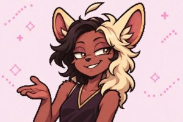
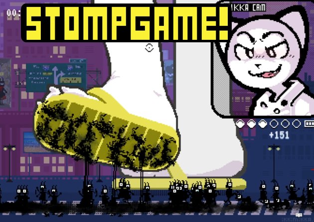
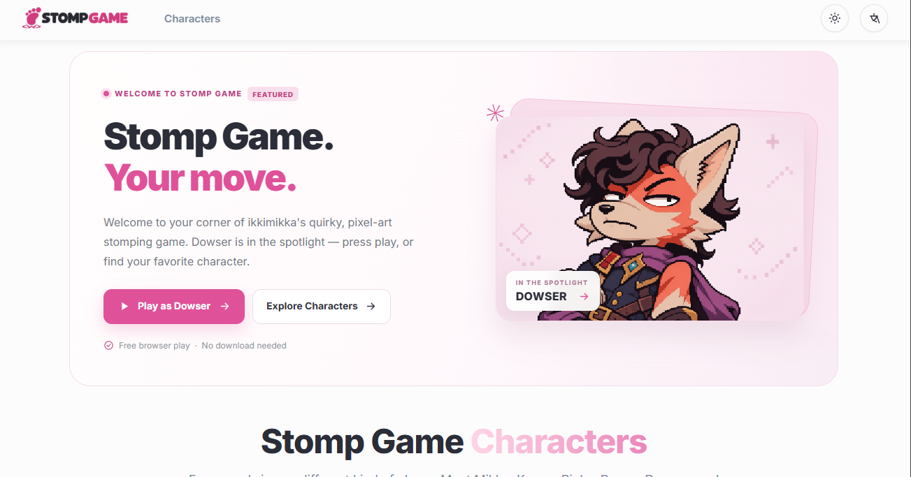
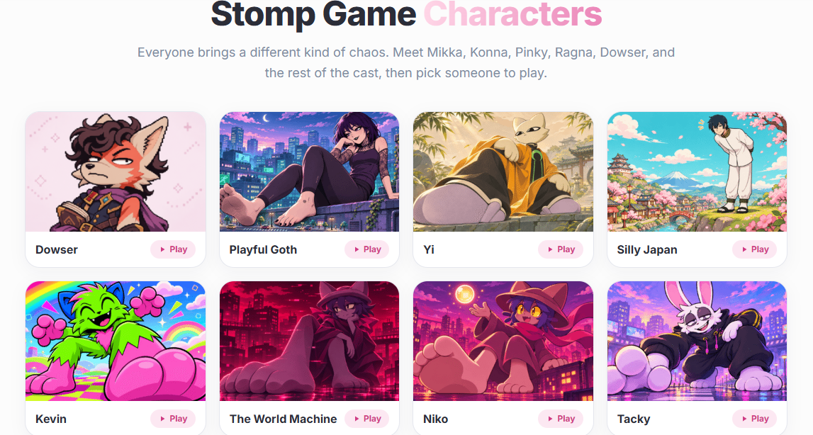
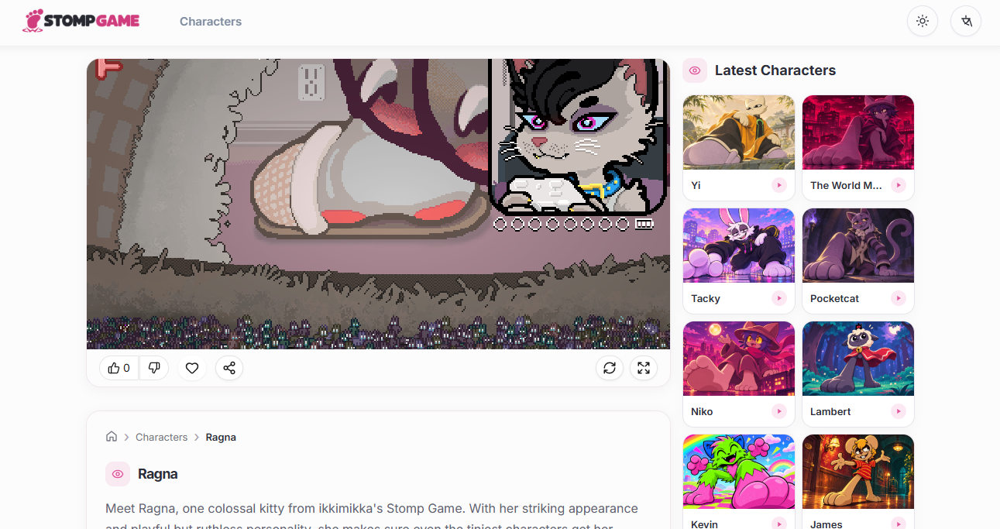

History of official stompgame (+ some of our stuff)
.png)
STOMPGAME
StompGame was created as a beta by solo dev IkkaMikka (long for Mikka, the creator's OC and fursona/self insert/ idk). StompGame started as a very simple game about stomping ants, made in 2025. Before StompGame, the IkkaMikka website was a photo gallery.
Later on, update 2 came with various new characters. This is when the 2 StompGame fans (me and M, D writing this right now) found out about it, September 13th.
As time went on, new content would be added and lore would be expanded, but a sequel to StompGame came out called Clickies later, around late October to early November 2026.
Later on, update 2 came with various new characters. This is when the 2 StompGame fans (me and M, D writing this right now) found out about it, September 13th.
As time went on, new content would be added and lore would be expanded, but a sequel to StompGame came out called Clickies later, around late October to early November 2026.
joke art of caked up stom p gamme with tiny ants hiding under his ahh
As time went on, we would obsess around Stompgame. Before Clickies, we were making StompGame2, we got as far as logos and characters (Daddy would end up in the final StompRPG, started around November 2026). Clickies is a simple clicker game where you click to stomp or do various other actions.
Next would be update 6, adding a variety of new content but also adding bonus content on Itch.io if you buy the exe for $2.00. This seems like a blessing, but on 11/19/26, the same day I was writing this, StompGame would be changed. The Itch.Io now contains the browser StompGame and going to the offical site (ikkamikka.net) now redirects to the Itch.Io version. The Itch.io version is entirely different, removing clickies, the gallery, adding a logo, and worst of all removing the mikka in the top left. A day earlier, a fake StompGame site (stompgame.fun) would be made, containing AI upscaled visuals and built in mods.
Next would be update 6, adding a variety of new content but also adding bonus content on Itch.io if you buy the exe for $2.00. This seems like a blessing, but on 11/19/26, the same day I was writing this, StompGame would be changed. The Itch.Io now contains the browser StompGame and going to the offical site (ikkamikka.net) now redirects to the Itch.Io version. The Itch.io version is entirely different, removing clickies, the gallery, adding a logo, and worst of all removing the mikka in the top left. A day earlier, a fake StompGame site (stompgame.fun) would be made, containing AI upscaled visuals and built in mods.



1st cover for STOMPGAME! on Itch.io.


<- these are the pages for stompgame.fun on release. Characters credit the correct owners, but their "publish dates" are for when they were added to stompgame.fun, not stompgame. The entire website seems to be AI generated, from pictures to the layout. Also worth note, some of the portraits are horribly made, making the character's arms invisible.
There is a new fake website or guide what the fuck is a playstomp.com fuck all of this.